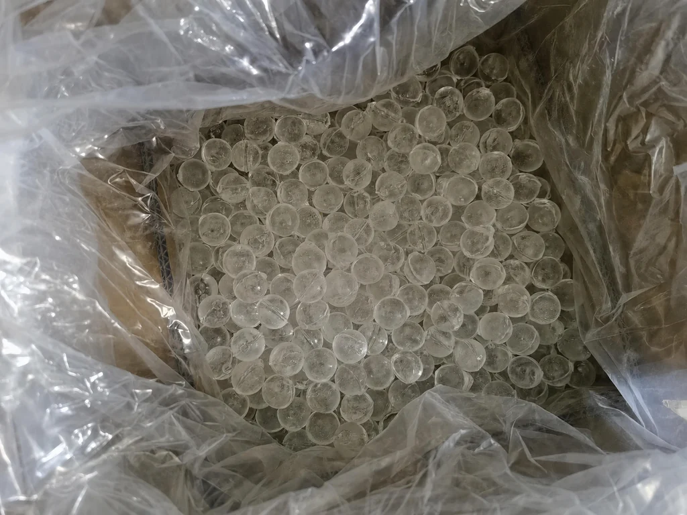
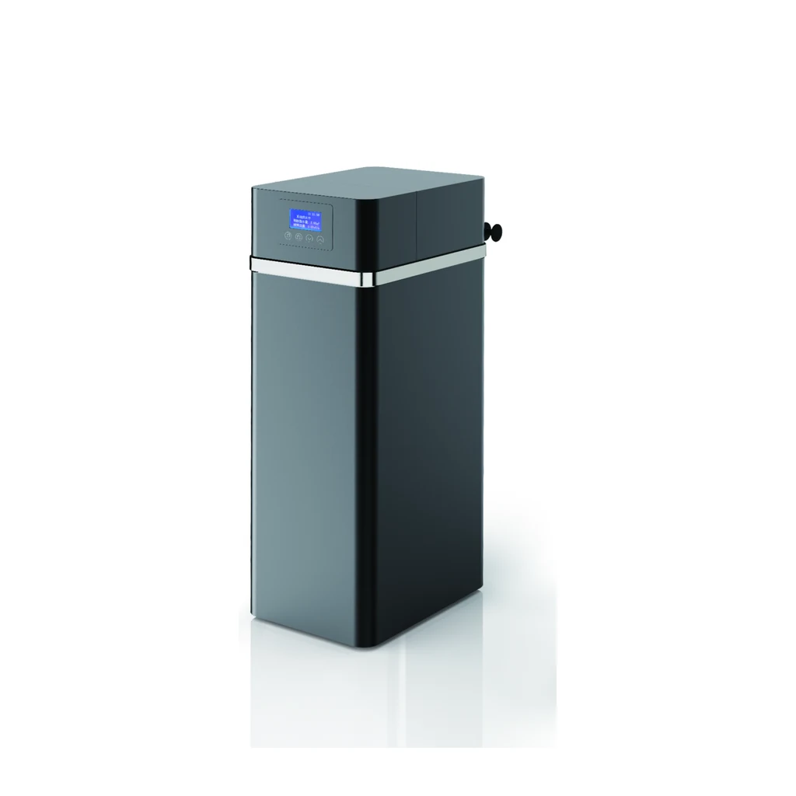
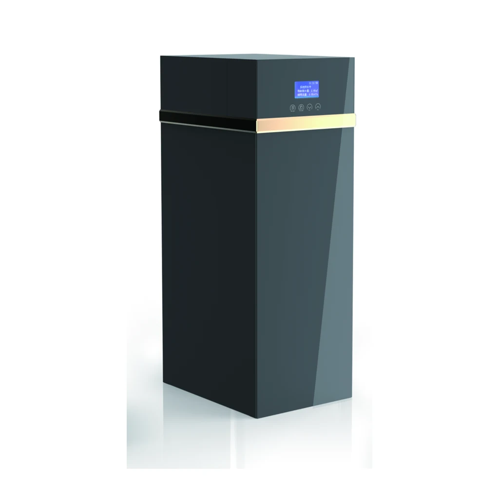
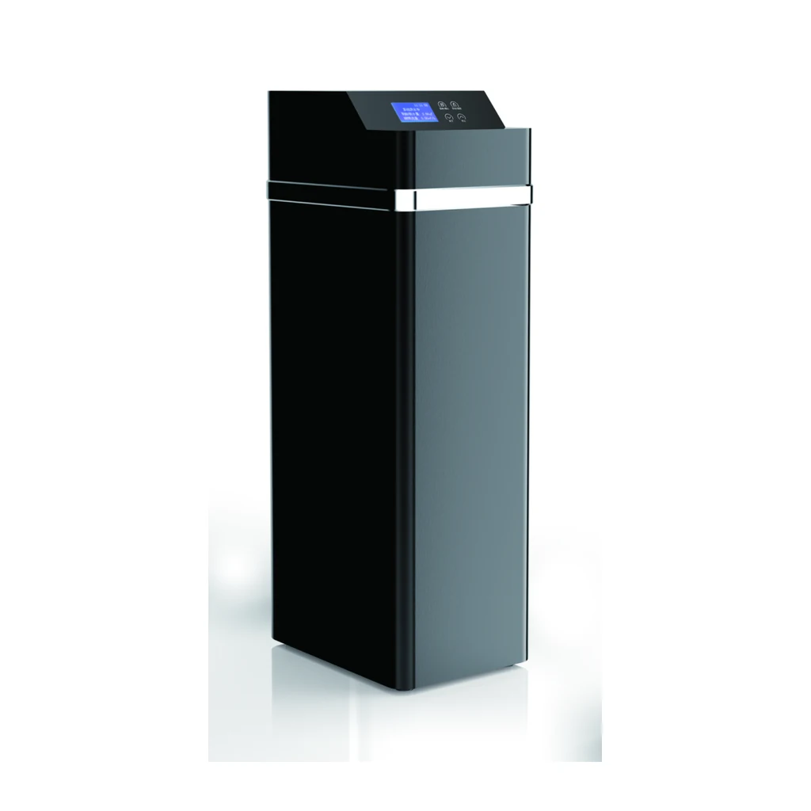
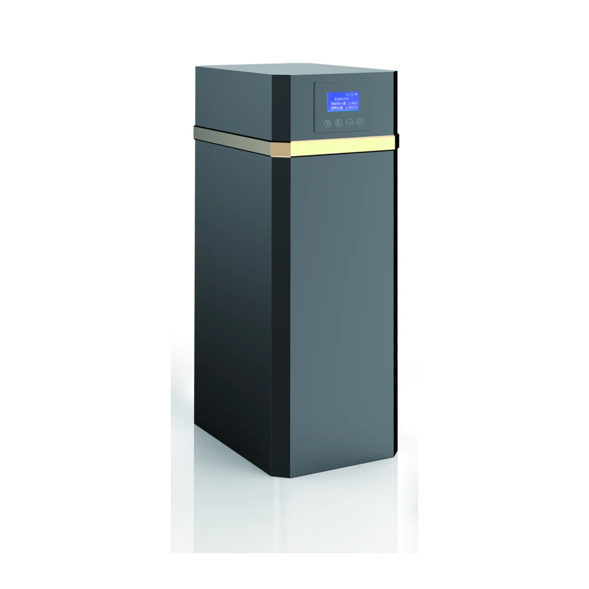
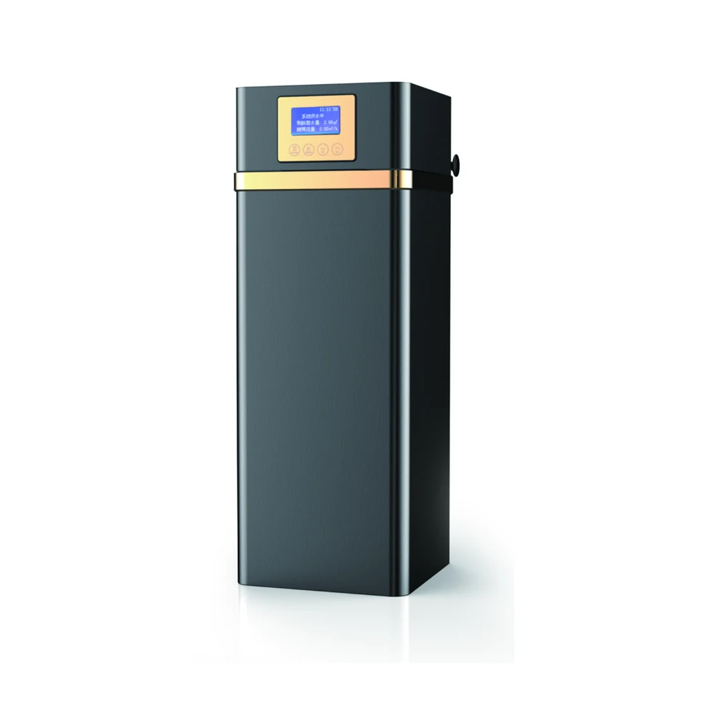
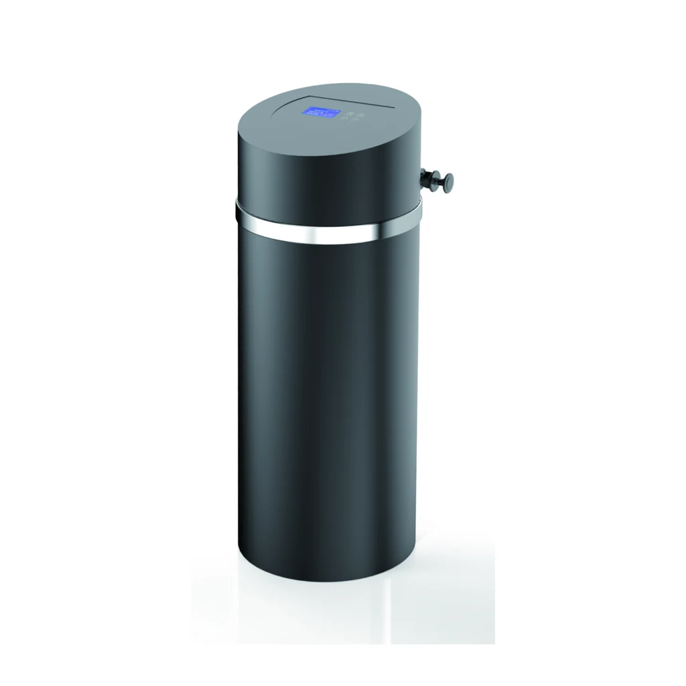

15 models · 5 series
Системи за омекнување вода
Потврдете ги приклучокот, димензиите и барањата на проектот пред понуда.
15models
5series
6Автоматски системи за филтрирање вода
Производи
Потврдете ги приклучокот, димензиите и барањата на проектот пред понуда.
Системи за омекнување вода · 15 models / 5 series





Автоматски системи за филтрирање вода · 6 models / 2 series
Потврдете ги приклучокот, димензиите и барањата на проектот пред понуда.

